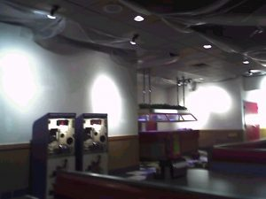
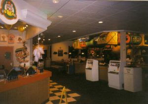
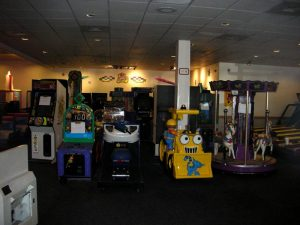
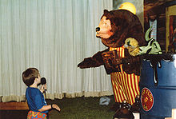
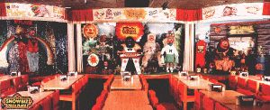
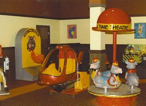
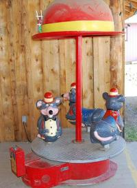
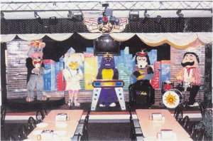
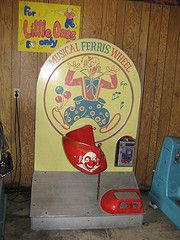

If you see any issues, please do make us aware via our Contact Form.
Thank you for browsing FNaFLore.com, we hope you enjoy the improvements that are coming to the site!

FNAF and Fear
Five Nights at Freddy’s: Adult fear for little bodies
Five Nights at Freddy’s. The video game that captured the imagination of young children, teenagers, new parents and middle aged ones. For something to have so much universal appeal is so rare. Extremely so. I would be willing to weigh and measure the success of FNaF against such phenomena as the Yoyo, or Super Mario Bros. Something so universal, so unique that it has become a part of pop culture, not simply known amongst video gamers. Those who have not played it still know it. This kind of achievement most likely only happens genuinely once per decade. Fads come and go, we are currently worshipping at the alter to the fidget spinner, but FNaF, and it’s immensely popular sequels, have changed the face of gaming. Popularized a whole new genre. To do this one must not only be unique, but one must have universal appeal. How Scott achieved this, in my opinion, is the very heart of this article.
 |
 |
 |
Fear. Yes, it’s a horror game, that much should be obvious, and most likely would seem to be a simplification. It is not, because fear, the kind that makes one jump and scream, that keeps you staring into a dark corner, straining to see if something is there but to afraid to rise and check, that kind of fear is such a delicate balance. One can so rarely scare all people at all times, because the experience is so subjective. I think Scott got around this, early on, by interweaving so many types of scares. There’s the jump scare. Good. That is great for an adrenaline surge, something to set you off balance, prepare your body for a fight or flight response. That response is in itself brilliant in how Scott handled it. It is primitive, hind brain stuff, so very hard to control, and thus allowed him to exert control over us, by simply removing one of the options. You are being stalked and yet you cannot flee. You are forced to confront. To stave them off, slow them down, weaponless, your life protected only by a door…or a light…or a mask. Danger so close you can see it, in the same room, staring at you. The animal, primal urge to survive is triggered, and you, the human, so normally the apex of the food chain, are the prey. Another fear is of the unknown, the paranormal. The suits are haunted. How does one kill a ghost? How can you protect yourself from that? They are dead, they should not BE, and yet they are stalking you. Something so dreadful, so unknowable, relentless and relaxed. THEY have all the time in the world, these children who’s time on earth was so terribly shortened. They can wait for you to run out of power, why not? If they don’t get you that night, why not the next, or the next after that? Time has no meaning to the dead, and no matter what you do, i.e., don’t drink, don’t smoke, don’t speed, don’t do drugs, eat right, work out, no matter what, one day you shall die. Death is inevitable, and the reminder is knocking at the door.
 |
Scott’s use of atmosphere is sublime. As a child of the 80’s myself, I could have picked up on his influences with my eyes closed. Those dark, dingy Showbiz Pizza locations that ruled family dining in Texas in the 70’s and 80’s, so very different from Chuckie Cheese now. I had precisely one birthday party there, in 1985. The poorly maintained animatronics on their cheap stage, jerking and spazzing, lips out of sync with the songs. Large block hands mashing at keyboards and swiping at strings. Those things were TERRIFYING. They were not the bright, promised characters from the cartoon commercials and print ads. These places barely had any lights. I recall it feeling so very gray and dirty, the employee indifference omnipresent. Even in the 80’s, a $200 birthday party came with a cake so small I could have finished it myself. These people didn’t care. Worse still, my most vivid recollection from being there? The dining room was separated by a wall from the arcade and game rooms. There were no chairs in the play area, and thus adult parents were essentially encouraged to be seperated from their children. There was a literal, physical wall between parents and children. It was fine! There were adults in costumes, and a sleepy, indifferent teenager at the prize counter! Even as a young child, I remember being uncomfortable with this. So many children were taken during this period of time, from these kinds of restaurants, that during the unification that turned them all into Chuckie Cheese (Something I believe Scott pulled from when making FNaF2) that they implemented a hand stamp system to match children to family. Prior to this, children were practically gift boxed to predators. I have to wonder how many of them opened this type of establishment. Was I paranoid, or perceptive?

Another way he got us, though? Particularly those of us blessed to be parents? He tapped into our deep, primal fear of losing a child. The grief so profound one cannot fathom it, so big you know you would be swallowed by it, drowning in your own tears. Worse, what if it’s your fault? Because if it happens, it will, to you, be your fault. Sure, you didn’t kill them, but you’re the adult. You know there are predators out there, and that children scurry like so much prey. A single moment of absent mindedness, casual indifference, you took yours eyes off of them, and they are….gone. YOU failed them. YOU abandoned them to their fate, perhaps just to snag a coke from the bar. YOU promised them you would always protect them. You have very likely said those very words at one time or another, or, if not those, you still understand the contract between parent and child. The one made the moment they wrap tiny, wrinkled fingers about your finger and your heart. Your life for them, your life for them. To fail that is to destroy oneself. |
Worse still, they never found the children’s bodies in FNaF, or so we are told. I was unfortunate enough to actually have a classmate of mine vanish after high school. This was a young adult, but her father never..stopped…looking. It’s a fairly famous case, or at least his hunt was, covered in newspapers and in one of the first episodes of a TV show set around the search for the lost. Here is the link to his story. He sold his house to fund continuing to search for her. He followed every clue, across the country and out of it, any distant glimmer couldn’t be ignored. He simply could not give up on her, and he died without that closure. We still don’t know where Leah went. Like the children of FNaF, we likely never will.
 |
 |
As Leah’s father searched for her, I continued to grow, to have my children and my life. From the moment my eldest was born, my sympathy for him grew triple fold…because, you see, I suddenly understood that tiny, dark secret in his heart. One I suspect is in the heart of so very many parents of lost children, and so black of mood it cannot be spoken. I believe he prayed to find her body. To discover that she was killed within hours or days of vanishing. I believe he wished this because the alternative is so horrifying, so mind shattering to be said. What if my child is still out there, and someone is hurting him or her, and they don’t know why you won’t save them? Mother is the word for God in the minds and hearts of little children, is how the phrase goes. That my child could one day be crying my name in the dark to help them, and I can’t get to them. Utter impotence. Complete failure. In that direction lies madness. He likely had gone a little mad, but I couldn’t blame him. Going on ten years of the hunt, madness was mercy. Mercy from looking every time a voice in the crowd cried for daddy. From imagining all her cries for daddy that went unanswered. Even though the parents of those lost in the games are barely discussed, save for in the tie in novels, when playing, I became those parents, and all one can do then is scream.
 |
School teacher, parent, gamer, old enough to know better.